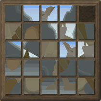
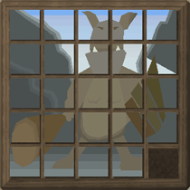
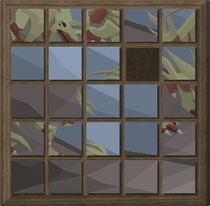

")
Treasure Trails
Introduction | Location | Requirements | Recommended Items
Following the Trail | Clue Types | Obstacles on the Trail | The End of the Trail | Rewards | Development Team
Following the Trail | Clue Types | Obstacles on the Trail | The End of the Trail | Rewards | Development Team
Treasure Trails are only accessible by RuneScape Members. Please subscribe to get this feature.
Please note this is a 'Dangerous' distraction and diversion. If you die on a treasure trail, you will lose your items.
Introduction

Once you have a clue scroll, read it by either left-clicking, or right-clicking and selecting 'Read Clue Scroll'. You will only receive a new clue scroll if you do not already have one in your bank or inventory.
There are four levels of difficulty for clue scrolls - easy (1), medium (2), hard (3) and elite (4). If you are just starting out, your best option is to go after a low level NPC. These will drop level 1 clues, whereas stronger NPCs will drop level 2, 3 or 4 scrolls (depending on which NPC you go after). A selection of NPCs that drop the different levels of clue scroll are shown below.
Not all NPCs that drop scrolls are detailed below.
| Level | NPC | Location |
| 1 | Men | All around RuneScape |
| Goblins | Goblin Village, Goblin Cave, Lumbridge Swamp | |
| Barbarian | Barbarian Village | |
| Farmers | Various locations | |
| Al Kharid Warrior | Al Kharid Palace | |
| H.A.M. Member | H.A.M Headquarters | |
| Thugs | The Wilderness and Varrock | |
| Thief | Varrock |
| Level | NPC | Location |
| 2 | Guards | In most large towns |
| Tribesman | Karamja Jungle | |
| Jogre | Karamja Jungle | |
| Ice Warriors | Blurite Mine | |
| Paladin | Ardougne |
| Level | NPC | Location |
| 3 | Jelly | Fremennik Slayer Dungeon |
| Green Dragons | The Wilderness | |
| Greater Demons | The Wilderness and Entrana Dungeon | |
| Blue Dragons | Taverley Dungeon and the Heroes' Guild | |
| Hellhounds | Perfect gold mine and Taverley Dungeon | |
| Red Dragons | The Wilderness | |
| Black Dragons | Taverley Dungeon and the Wilderness |
| Level | NPC | Location |
| 4 | Skeletal Horror | Odd Old Man's hut |
| Dagannoth kings | Waterbirth Island | |
| Kalphite Queen | Kalphite Hive | |
| Corporeal Beast | The Wilderness | |
| Chaos Elemental | The Wilderness | |
| God Wars bosses | God Wars Dungeon | |
| Bork | The Chaos Tunnels |
Please be aware that it is possible to defeat lots of clue dropping NPCs and not receive a clue scroll because the chance of receiving a clue is random. You may have to complete several clues before you reach your treasure, depending on the level of the clue scroll you are undertaking.
Location
The treasure trails can take you on a journey around RuneScape. There's no way to know where you're going or how long it will take until you receive your next clue.
Requirements
There are no specific requirements to complete a treasure trail. However, if you attempt to gain a level 3 or 4 clue scroll, you will need to have a high Combat level to obtain a clue scroll from these NPCs. Once you have the clue scroll, it is almost certain that a high level scroll will lead you through areas where you need to carry food that heals a lot of life points.
Recommended Items
There are different types of clue scrolls. Some may require you to use your brain or travel somewhere. Some items are essential when following treasure trails.
| Items Needed | Obtained from | Use on Treasure Trails |
![[image]](../../img/main/kbase/items/books_and_docs/clue_scroll.gif) Clue Scroll Clue Scroll |
This item is obtained from NPC drops. | Needed to find next location of clue or treasure. |
![[image]](../../img/main/kbase/items/misc/watch.gif) Watch Watch |
To get the watch you need to go to the Clock Tower, south of Ardougne, and talk to Brother Kojo. | Used to solve coordinate clues. |
![[image]](../../img/main/kbase/items/misc/sextant.gif) Sextant Sextant |
This item is obtained by speaking to Murphy, the Fishing Trawler captain. You will need to speak to the professor north of the Observatory first, so he can tell you this is needed. | Used to solve coordinate clues. |
![[image]](../../img/main/kbase/items/books_and_docs/chart.gif) Chart Chart |
When you have the sextant and watch, head back to the professor north of the Observatory and he will give you the chart. | Used to solve coordinate clues. |
Some clues may require more than solving a puzzle or answering a riddle. For these clues you may need a few extra items (not all the items in the tables below are necessary, but you may find them useful):
| Additional Items | Obtained from | Use on Treasure Trails |
![[image]](../../img/main/kbase/items/tools/spade.gif) Spade Spade |
This item can be obtained from many gardeners near Farming patches. They may be available from general stores. | Required to dig up next clue or retrieve treasure. |
![[image]](../../img/main/kbase/items/misc/climbing_rope.gif) Rope Rope |
This item can be obtained from some general stores or can be made for you (for a price) if you bring wool to Ned in Draynor Village. | May be required if your clue takes you to a cave you can only access by rope. |
![[image]](../../img/main/kbase/items/runes/lrune.gif) Runes Runes |
These items can be bought from stores, crafted by players or found as monster drops. | May be useful if you have to travel over large distances and require teleporting. |
![[image]](../../img/main/kbase/items/amulets/glory_amulet.gif) Teleportation jewellery Teleportation jewellery |
These items can sometimes be player-made or may be a reward from a quest. For more information on teleportation see the Teleportation Spells section of the Manual. | Using teleportation jewellery is useful over long distances to save time travelling between clues. |
![[image]](../../img/main/kbase/items/food/baked/apple_pie.gif) Food Food |
This item can be obtained from Fishing, killing animals, made using the Cooking skill or bought from stores or other players. | Your clues may require you to travel over dangerous terrain so it is recommended that you carry food, especially when following a level 3 clue scroll. |
![[image]](../../img/main/kbase/weapons/melee/steel_battleaxe.gif) Weapon Weapon |
Weapons can be obtained from shops, traded with players or from monster drops. | Following a high level clue will certainly bring you through dangerous areas, so it is important that you carry a weapon to defend yourself. |
Following the Trail
Following clue scrolls can be a very long expedition. It is important that you try to use any shortcuts or transport that you can. This will help reduce the time you spend travelling between each clue. For information on the different types of transportation available through RuneScape, please see the Transportation Guide.
The following are all types of clue scrolls that you may receive on your treasure trail:
- Simple clues (easy)
- Riddles (medium, hard)
- Maps (easy, medium, hard)
- Sextant coordinates (medium, hard)
- Anagrams (medium, hard)
- Emotes (easy, medium, hard)
- Compass (elite)
- Scans (elite)
- Speak to an NPC (simple clues, anagrams, riddles)
- Look/search a location (simple clues, riddles, maps)
- Dig with a spade (riddles, maps, sextant coordinates, compass, scan)
- Perform an emote (emotes)
Some of the NPCs you talk to may ask you to solve a challenge (anagram clues - medium, hard) or a sliding puzzle (riddle - hard), while some of the locations you have to search are locked and will require you to get the key off another NPC (riddle - medium). You might even be faced with an aggressive NPC to fight (emotes, sextant, compass, scan - hard, elite), or dig up a casket or scrollbox locked with a sliding puzzle or a celtic knot puzzle (compass, scan - elite).
Clue Types
Simple clues (easy)
Some clues may direct you to search certain locations or talk to an NPC for further information on your treasure trail. The NPCs and locations can be as far as a house in Yanille or an NPC in Mort Myre swamp in Morytania, so be certain that you know their correct location as this will save you valuable travelling time.
Riddles (medium, hard)
Once you have got to the new location from your last clue, you may find that your next clue requires you to answer a riddle. Riddles simply need an answer, but the question will be put in a clever and amusing way, making you put a bit of thought and effort into the answer. The answer to the example riddle has not been given because you may be given this riddle in your clue scroll.
For example:
46 is my number. My body is the colour of burnt orange and crawls among those with 8. 3 mouths I have, yet I cannot eat. My blinking blue eye hides my grave.
Maps (easy, medium, hard)
These clues represent a particular place or area. You need to identify this area using the world map and then travel to that location.
On the map you will see either an 'X' that will show you the place to look or dig, or a crate will be on the map. This means you will have to search crates or boxes in that location to find your next clue or treasure. Some clues contain both indicators.
There are three different levels of difficulties to the maps you may receive: easy, medium and hard.
Sextant coordinates (medium, hard)

Navigating to the spot isn't difficult - just visit the Observatory (some distance south-west of Ardougne) and ask the professor to teach you how to navigate.
Coordinate clues need sextants to tell them the coordinates of the place where they're standing. The Observatory professor will help you get one of these. To use the sextant left-click or right-click and select 'Look through Sextant'.

Compare these to the coordinates on your clue, and you'll see whether you need to go north, south, east or west to find your treasure.
Anagrams (medium, hard)
Anagram clues require you to rearrange letters to form another word. The word that is formed is the name of an NPC. You then have to travel to that NPC to get your next clue or receive your treasure.
For example: El Ow
Emotes (easy, medium, hard)
Emote clues are a bit like spy-work. You will be required to go to a specific location wearing certain items to perform an emote.
If you follow the instructions correctly, then Uri will appear and you will be able to claim your reward. Beware, though, that harder clue scrolls may present you with a double agent who you must kill in order to make Uri appear.
Compass (elite)
Rather than giving you a coordinate location and requesting you to use the sextant to find that location, a compass puzzle simply presents you with an arrow in the direction of which you should travel. Once you have reached the treasure trail destination, the arrow will turn into a cross and you will know to start digging.
Scans (elite)
By right-clicking on your scanning clue scroll and selecting 'Scan', you can scan the area about you. You will then need to walk around until you get close enough that the scan presents you with a hintarrow on your minimap, which you can follow until you find your treasure trail location. You may also right-click the scroll to find out which area needs to be scanned. The scan range will be indicated as soon as you begin scanning.
Obstacles on the Trail
On the trail, you may be asked to solve sporadic puzzles or overcome a hostile NPC. These make the treasure trails varied, and ensure that you are always on your toes!
Challenges
On the trail of a high-level clue scroll, you may come across an NPC who has a challenge for you to decipher. They may ask you how many trees there are in a certain area, or any number of other questions about your surroundings. Answer them and you'll be able to move on to the next part of your treasure trail.
Sliding puzzles
These puzzles are quite simple. They may be given to you by an NPC when on your hard trail, or they may be dug from the ground on an elite trail. You need to rearrange the tiles so that the correct picture is formed. Once you have solved the puzzle, you will receive your reward.
Below are some solutions to known sliding puzzle clues. If you wish to view a completed version of your sliding puzzle in-game, hover over the 'Hint' button on the bottom-left of the sliding puzzle.
| Sliding puzzle | Solution | |
|  |  | |
|  | ![[image]](../../img/main/kbase/minigames/trails/puzzle2_completea.gif) |
|
![[image]](../../img/main/kbase/minigames/trails/puzzle3_mixeda.gif) |
![[image]](../../img/main/kbase/minigames/trails/puzzle3_completea.gif) |
Celtic knot puzzle

For example, if a red and blue track intersects, the same rune (a cosmic rune, death rune, etc) must be showing on both tracks. You move the tracks clockwise or anticlockwise by clicking on the relevant arrow until all intersections have matching runes in this way (with all intersections ringed in green), and then press 'Unlock'.
Hints
- Hover over the 'Invert Paths' button to see what lies on a track that runs underneath another track.
- Look at only two tracks at a time; often it can be overwhelming to try to match all three at once. If you focus on getting two tracks to intersect correctly, then it will take very little time at all to match up the third track.
- If necessary, use trial and error. Keep the grey track locked in place and keep cycling through on another track until all intersections match up. If this does not happen, move the grey track one place and try again. This will eventually lead to success!
On the trail of a high-level clue scroll, you may come across a mage or a double agent who defends their buried treasure. The level of your opponent depends on whether you are in a safe or dangerous area, with harder enemies being woken in safe areas.
To prevent an enemy from being roused, bring meerkats with you. Their 'Fetch Casket' scroll power means they can can dig for buried treasure without making as much noise as an armour-clad adventurer, handing you the casket or scrollbox without any confrontation. Meerkats can also act as a sextant and spade on treasure trails.
The End of the Trail
The table below shows what items may be useful when following certain clue scrolls. Refer to the Recommended and Additional items tables, earlier in this article, to find out where to get the items and what use they have on the treasure trails.
| Clue Type | Recommended Items | |||||||
| Simple clues | |
|
||||||
| Riddles | |
|
|
|
||||
| Maps | |
|
|
|||||
| Sextant coordinates | |
|
|
|
|
|
||
| Anagrams | |
|
||||||
| Emotes | |
|
|
|
||||
| Compass puzzles | |
|
|
|
|
|||
| Scans | |
|
|
|
|
|||
Development Team
| Rework | |||
| Developer: | Jon S, Tony W | Developer: | Frederique G |
| QA: | Andy C | QA: | Dan G, Dan O, James H |
| Graphics: | Graphics Team | Graphics: | Mark C |
| Audio: | Ian T | Audio: | Adam B |

|
More articles in Distractions and Diversions
|
|
|
Further Help
If this article does not help you, you may find the following sections of the RuneScape site helpful:
|
|